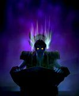

Druzilla
Age : 21 ans
Sexe : Femme
Race : Mort-vivant
Faction : Horde
Formation : Prêtre
Description : Née à Lordaeron d'une famille noble, Druzilla était la fille d'un capitaine de la garde et d'une ambassadrice du Roi. Très vite attirée par les vertus de la Lumière, elle s'engagea dans la voix de la prêtrise et en fut une disciple douée.
Peu de temps avant l'arrivée du Fléau, elle tomba amoureuse au premier regard d'un Elfe de la Nuit, venu avec une petite délégation de son espèce au château du Roi. Elle fit part de ses sentiments à sa mère qui lui déconseilla de s'amouracher d'êtres aussi hautains et distants (triste expérience d'être ambassadrice auprès d'un peuple qui ne veut de contact avec personne^^). Pourtant, un soir où un bal en leur honneur illuminait le château, elle prit son courage à deux main et parvint à se glisser sur un balcon où l'élu de son coeur s'était retiré. Là, sous la Pleine Lune, elle déclara sa flamme à cet être qu'elle connaissait à peine...C'est sous cette même Lune qu'il jura qu'au grand jamais, il ne pourrait aimer une fille d'humain. Le coeur brisé, elle fuit dans sa chambre et s'y enferma pour pleurer toutes les larmes de son corps...
Quelques jours plus tard, le fils prodigue du Roi, le Prince Arthas était de retour dans la capitale après sa grande campagne de guerre...
Ce soir là, toujours cloîtrée dans sa chambre, Druzilla ne vit pas la brûme verdâtre s'insinuer sous sa porte, et alors que la douleur de la mort envahissait son corps, ses yeux restaient rivés sur l'astre nocturne qui semblait vouloir disparaître et ne pas assister au carnage...
Poussée par la haine du Roi Liche et ses propres pulsions destructrices, Druzilla découvrit les pouvoirs des Ombres et sous les ordres de la nouvelle régente de Lordaeron, Sylvanas Windrunner, elle démontra un grand talent pour terroriser et torturer les pauvres populations humaines qui tentaient de fuire le Fléau. Accompagnée de Mumrah et de Dawne, elle dirigea une partie des armées mort-vivantes pour faire face à la résistance des vivants. Au milieu de ce tumulte, de cette pression mentale démoniaque, elle trouva un peu de réconfort dans le comportement de la Banshee, droite et digne. Un comportement qu'elle avait tant admiré dans une autre vie. Et lorsque Sylvanas eut l'opportunité de se libérer, elle la suivit avec sa nouvelle soeur, et son nouveau frère, Dawne et Mumrah. Pour la gloire de la nouvelle Reine Sylvanas, tous trois participèrent à la réorganisation des nouveaux Réprouvés.
Peu de temps après, Tzaar, un agent de la Reine, vint leur annoncer la formation des Frères de Guerre, une guilde née sur les ruines fûmantes du Mont Hyjal qui avait pour but d'unir et de servir la Horde. Cette ambition eut été du goût de la Reine s'il n'y avait pas ce risque qu'ils empiètent sur ses projets personnels : la Seconde Peste...
Constatant que les ennemis des Réprouvés étaient puissants et nombreux, la Reine Banshee décida de multiplier les signes de bonne volonté envers la Horde. C'est ainsi que Tzaar fut envoyé chez les Frères de Guerre en tant qu'émissaire des Réprouvés. Pour les infiltrer de l'intérieur, Dawne, Mumrah et Druzilla acceptèrent de subir le Rituel de Renaissance, une cérémonie magique durant laquelle une grande partie de la mémoire d'un réprouvé est effacé (il était important que les FdG n'aient pas de soupçons en voyant arriver des êtres si expérimentés), seuls subsisteront une part de la personnalité et la mission qu'il leur avait été confiée : surveiller les Frères de Guerre, veiller à ce qu'ils ne deviennent pas une entrave à la Nouvelle Peste.
Ce soir là, allongée sur une dalle de pierre alors que les vapeurs âcres des apothicaires commençaient à pénétrer son esprit, son regard se tourna vers les cieux, où la Lune, presque narquoise, brillait de tous ses feux.
Ainsi fit elle son entrée chez les Frères de Guerre, l'esprit embrûmé pendant quelques temps mais heureuse de retrouver Dawne et Mumrah, sa seule famille.
Plus d'infos sur Druzilla >>>
Melena
Age : 18
Sexe : Femme
Race : Orc
Faction : Horde
Formation : Guerrier
Description :
"Melena ? Pour sûr que j'la connais. Pauvre petite, va, elle a vraiment pas eu de chance. Mais j'pense qu'elle saura se débrouiller seule, croyez moi ! Elle a la hargne, cette gamine."
Un Kor'Kron d'Orgrimmar, devant une choppe de bière.
Melena était une orc tout ce qu'il y a de plus normal, ayant eu la chance de vivre la construction d'Orgrimmar - les siens ayant aidé à ériger la Cité de Thrall - et donc de grandir dans les rues inégales de la ville.
Vers ses douze ans, suite a une mésaventure dont elle n'a jamais voulu ni pu parler, Melena sortit du plus profond quartier de la Cité des Orcs changée par un sort, ou une malédiction ressemblant à l'ancienne influence des démons de Sargeras. Les yeux injectés de sang, elle errait dans la cité, cachée sur les toits ou dans divers recoin obscurs. Le point culminant de ce sombre passage de son histoire fut le soir funeste où elle retourna chez elle apres deux semaines d'absence pour égorger sa propre mère comme une bête, avant de laisser là son cadavre pour s'en retourner vers sa tanière.
Mais la jeune orc avait laissée des traces, et un chasseur troll la débusqua et l'amena à la cour de Thrall, qui avait eu vent de l'histoire (ce qui n'est pas vraiment exceptionnel, vu la bestialité de l'acte et la relative petitesse de la cité). Le Chef observa la jeune bête avec interêt, puis la confia à une des membres de sa garde, les Kor'krons, du nom de Neva.
Neva garda Melena attachée au bout d'une chaîne pendant plus d'une semaine, la droguant pour la calmer et, peu à peu, parvenant à lui rendre un semblant "d'humanité" (le mot étant mal choisi )...Une fois redevenue elle-même, Melena subit des études et interrogatoires poussés en vue de découvrir ce qui lui était arrivé. Mais jamais, pas même sous l'influence de puissants sorts, elle ne put parler de ce qu'elle avait vu, plus bas, sous le Gouffre de Ragefeu.
N'étant pas vraiment utile, Melena fut oubliée des Chamans et autres Druides, et son éducation fut confiée à Neva.
Pendant six ans, jusqu'à sa majorité, Melena s'entraîna chaque jour pour le métier des armes, en vue de rejoindre ces Kor'Krons qu'elle admirait tant. Elle apprit le maniement de la hache et de l'épée, ainsi que diverses façons de se défendre, à mains nues ou non. La jeune orc découvrit aussi la puissance du lien qui liait Neva, sa seconde mère, à ses frères d'armes. Elle connait d'ailleurs beaucoup des gardes de Thrall par leur nom. Mais le sort s'acharnait toujours contre elle, et ce qui devait arriver arriva : Neva fut tuée en repoussant une des têtes de pont des Humains de Theramore, sur le sol de Durotar.
Melena resta inconsolable pendant quelques jours, puis renonça finalement à poursuivre son rêve d'entrer dans les Kor'Krons... Empoignant une hache et un petit sac, elle parti en direction de la Vallée des Epreuves, bien décidée à changer de vie et à trouver son destin ailleurs que sur le sol sec de Durotar.
Plus d'infos sur Melena >>>